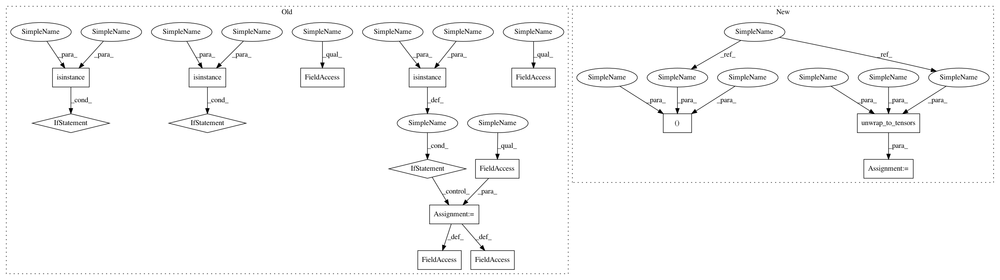

c7395e3c5b71f97983129c7c4fddced5ce341147,allennlp/training/metrics/f1_measure.py,F1Measure,__call__,#F1Measure#Any#Any#Any#,26
Before Change
// If you actually passed in Variables here instead of Tensors, this will be a huge memory
// leak, because it will prevent garbage collection for the computation graph. We"ll ensure
// that we"re using tensors here first.
if isinstance(predictions, Variable):
predictions = predictions.data
if isinstance(gold_labels, Variable):
gold_labels = gold_labels.data
if isinstance(mask, Variable):
mask = mask.data
num_classes = predictions.size(-1)
if (gold_labels >= num_classes).any():
raise ConfigurationError("A gold label passed to F1Measure contains an id >= {}, "
"the number of classes.".format(num_classes))
if mask is None:
mask = ones_like(gold_labels)
mask = mask.float()
gold_labels = gold_labels.float()
positive_label_mask = gold_labels.eq(self._positive_label).float()
negative_label_mask = 1.0 - positive_label_mask
argmax_predictions = predictions.topk(1, -1)[1].float().squeeze(-1)
// True Negatives: correct non-positive predictions.
correct_null_predictions = (argmax_predictions !=
self._positive_label).float() * negative_label_mask
self._true_negatives += (correct_null_predictions.float() * mask).sum()
// True Positives: correct positively labeled predictions.
correct_non_null_predictions = (argmax_predictions ==
self._positive_label).float() * positive_label_mask
self._true_positives += (correct_non_null_predictions * mask).sum()
// False Negatives: incorrect negatively labeled predictions.
incorrect_null_predictions = (argmax_predictions !=
self._positive_label).float() * positive_label_mask
self._false_negatives += (incorrect_null_predictions * mask).sum()
// False Positives: incorrect positively labeled predictions
incorrect_non_null_predictions = (argmax_predictions ==
self._positive_label).float() * negative_label_mask
self._false_positives += (incorrect_non_null_predictions * mask).sum()
def get_metric(self, reset: bool = False):
After Change
A masking tensor the same size as ``gold_labels``.
// Get the data from the Variables.
predictions, gold_labels, mask = self.unwrap_to_tensors(predictions, gold_labels, mask)
num_classes = predictions.size(-1)
if (gold_labels >= num_classes).any():
raise ConfigurationError("A gold label passed to F1Measure contains an id >= {}, "
In pattern: SUPERPATTERN
Frequency: 3
Non-data size: 15
Instances
Project Name: allenai/allennlp
Commit Name: c7395e3c5b71f97983129c7c4fddced5ce341147
Time: 2017-09-26
Author: markn@allenai.org
File Name: allennlp/training/metrics/f1_measure.py
Class Name: F1Measure
Method Name: __call__
Project Name: allenai/allennlp
Commit Name: c7395e3c5b71f97983129c7c4fddced5ce341147
Time: 2017-09-26
Author: markn@allenai.org
File Name: allennlp/training/metrics/categorical_accuracy.py
Class Name: CategoricalAccuracy
Method Name: __call__
Project Name: allenai/allennlp
Commit Name: c7395e3c5b71f97983129c7c4fddced5ce341147
Time: 2017-09-26
Author: markn@allenai.org
File Name: allennlp/training/metrics/boolean_accuracy.py
Class Name: BooleanAccuracy
Method Name: __call__
Project Name: allenai/allennlp
Commit Name: c7395e3c5b71f97983129c7c4fddced5ce341147
Time: 2017-09-26
Author: markn@allenai.org
File Name: allennlp/training/metrics/f1_measure.py
Class Name: F1Measure
Method Name: __call__